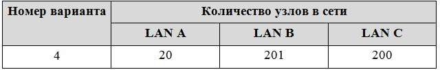
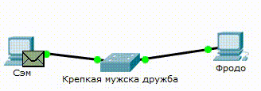
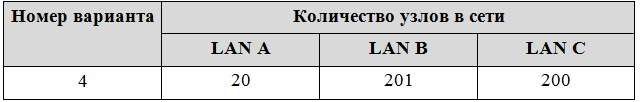
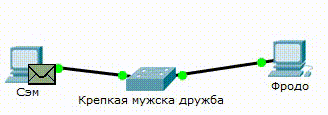

Отчет по лабораторной работе №1
Мой GitHubОтчет
Что сделано?
- Была создана страница html с использованием стилей css (отчет).

- Был создан хостинг на GitHub.

- Были добавлены ссылки на мою страницу GitHub и на сам отчет.
Отчет по лабораторной работе №2
Команда:
Дедков Игорь Владимирович Отчет
Коленкин Василий АндреевичОтчет
Никольская Александра Владимировна Отчет
Коробов Сергей Андреевич Отчет
Куликов Роман Дмитриевич Отчет
Задачи:
1. Выбрать тему проекта
2. Выбрать технологии для реализации
3. Разработать интерфейс веб-приложения
4. Разработать серверную часть веб-приложения
5. Создать презентацию готового веб-приложения
Что сделано?
1. В качестве темы был выбран сайт для игры в шахматы
2. В качестве технологий были выбраны C# для серверной часть и JS для клиентской
3. Был разработан концептуальный интерфейс приложения (представлен в презентации)
4. Был реализован основной функционал веб-приложения
5. Была создана презентация:
страница-презентация
страница-презентация
Отчет по лабораторной работе №3
Задачи:
1. Выполнить задание в системе Cisco Packet Tracer
2. Оформить отчёт на своей страничке
Решения:
1. Был выбран вариант 4:

2. Создана сеть из двух компьютеров и коммутатора (Добавлена LAN A - subnet:10.1.255.0, mask:255.255.255.224):

3.1. Создана сеть из четырёх компьютеров и двух коммутаторов (Добавлена LAN B - subnet:10.1.254.0, mask:255.255.255.0) :

3.2. Данная сеть не работает, т.к. для объединения разных сетей нужен маршрутизатор
4. Создана сеть из четырёх компьютеров, двух коммутаторов и маршрутизатора:

5. К существующей сети подключена дополнительная, включающая в себя коммутатор и компьютер (Добавлена LAN C - subnet:10.1.253.0, mask:255.255.255.0) :



Подготовка к экзамену
Билет
№ 24
1. Понятие центра обработки данных. Основные элементы инфраструктуры.
2. Применение современных технологий коллективной разработки программных средств в веб-программировании.
Ответ
1. Понятие центра обработки данных. Основные элементы инфраструктуры.
Центр обработки данных (ЦОД) – совокупность спланированных определенным образом помещений, внешних площадок, инженерных систем обеспечения и обслуживающего персонала, образующая общее физическое пространство и технологическую среду для размещения серверного, вычислительного или иного оборудования для приема, передачи, хранения и обработки информации, а также обеспечивающая нужную степень готовности в заданном режиме функционирования.
Назначение ЦОД — обеспечение гарантированной безотказной работы информационной системы предприятия с заданными уровнями доступности, надежности, безопасности и управляемости. Использование технологии создания центров обработки данных позволяет создавать резервные штаб-квартиры предприятий с сохранением максимально возможной функциональности информационной системы при чрезвычайных обстоятельствах.
ЦОД должен обеспечивать безопасность бизнеса и минимизировать риски простоя, отвечая следующим требованиям:
- Отказоустойчивость. Это свойство технической системы сохранять свою работоспособность после отказа одного или нескольких составных компонентов.
- Высокая доступность. Это свойство системы определяет её надёжность, возможность выполнять требуемую функцию при заданных условиях в данный момент времени или в течение заданного интервала времени при соблюдении определенного набора условий.
- Непрерывность бизнеса. Она включает в себя процессы и методы, направленные на обеспечение безостановочного выполнение критичных бизнес-функций.
- Катастрофоустойчивость. Это способность к восстановлению после катастрофы т.е. устойчивость к воздействию аварий и природных катаклизмов.
- Главная характеристика ЦОДа – отказоустойчивость, но не менее важными являются стоимость эксплуатации, показатель расхода электроэнергии и энергоэффективности (PUE). При определении требований к ЦОДу необходимо учитывать тенденции развития информационных систем и телекоммуникаций, предусмотреть варианты расширения мощностей ЦОДу в соответствии с планами развития предприятия.
Управление ЦОД:
- Инвентаризация, визуализация и управление активами. Что имеется в ЦОД (монтажные шкафы, серверы, сетевое оборудование), как расположено оборудование, его параметры и характеристики.
- Планирование изменений в ЦОД. Любое изменение в высоконагруженном ЦОД (установка нового шкафа, сервера, перемещение оборудования из шкафа в шкаф и т.д.) вызывает целый ряд проблем, связанных с определением возможности и осуществлением такого изменения. Очень много параметров влияют на решение – и наличие места в шкафу и наличие резерва электропитания, охлаждения.
- Контроль и управление энергопотреблением ЦОД. Чем ближе измеритель потребляемой мощности к нагрузке, обеспечивающей работу ИТ сервиса и чем больше таких измерителей, тем точнее карта энергопотребления ЦОД. Точные данные по энергопотреблению позволяют рассчитывать коэффициенты энергоэффективности (например, PUE), планировать размещение ИТ активов, отслеживать тенденции.
- Мониторинг рабочей среды серверных помещений и организация системы оповещения и противодействия в случаях аварийных ситуаций.
- Обеспечение удаленного доступа к ИТ-оборудованию для оперативного управления и устранения проблем;
- Мониторинг и управления критичной физической инфраструктурой в ЦОД, к которой можно отнести системы обеспечения бесперебойного питания (генераторы, ИБП), системы охлаждения и вентиляции.
- Формализация регламентов по внесению изменений в ЦОД – позволяет точно описать логическую и временную схему заданий каждому сотруднику ЦОД для реализации какого-либо изменения в ЦОД (инсталляция, перенос, вывод из эксплуатации, и т.д.).
Основные элементы инфраструктуры:
- Здание
Сейчас, когда затевается новый ЦОД с нуля, особенно крупный, строить его предпочитают в пригороде большого города с избытком недорогой электроэнергии, на свободной огороженной территории, в форме одно-, двухэтажных (часто модульных) строений. Но это не единственный вариант. ЦОД может размещаться и в центральной части исторического города. Главное, чтобы здание, в котором планируется развернуть центр обработки данных, соответствовало определённому набору требований по несущей способности стен и перекрытий, материалу конструкций, размерам и особенностям помещений.
Есть и такие требования, которые неискушённому человеку могут показаться неожиданными, например, защита от наводнений, ураганов, торнадо, сейсмической активности и вулканической деятельности, от опасностей, связанных с воздействиями прилегающих территорий, с транспортными коридорами, соседством с аэропортами, военными авиабазами. Достаточно распространённый вариант места размещения центра обработки данных — бывшие промышленные здания: цеха, склады. Компьютерное оборудование, предназначенное для центров обработки данных, имеет стандартизированные размеры и размещается в также стандартизированных стойках. - Электроснабжение
Надёжное и качественное снабжение электроэнергией — главное функциональное требование к дата-центру. Уровень качества электроснабжения для переменного тока определяют три основные параметра: напряжение, частота и форма кривой тока или напряжения. Несмотря на то, что в современном оборудовании используются импульсные источники питания, которые довольно устойчивы к искажениям гармонической формы электрического тока, их возможности по сглаживанию искажений небезграничны. Бесперебойность питания в ЦОД’ах обеспечивается совместным использованием двух элементов: аккумуляторных батарей и аварийных дизель-генераторов.
Почему двух? — Дело в том, что дизель-генератор невозможно запустить мгновенно. В лучшем случае на его включение потребуются десятки секунд. В это время питание должно обеспечиваться аккумуляторными батареями, переключиться на которые можно за считанные миллисекунды. Использовать только аккумуляторные батареи нельзя, потому что они не смогут обеспечивать электроснабжение достаточно долго. После запуска дизель-генераторов дальнейшее снабжение электроэнергией обеспечивают они, а аккумуляторные батареи переключаются на подзарядку. Резервное автономное питание требуется тогда, когда случается авария на магистральных линиях электропередачи. Устранение её последствий может занять десятки часов. Весь этот период должен покрываться дизель-генераторами, имеющими достаточный запас топлива. Для повышения надёжности постоянного электроснабжения обычно используют две электрические магистрали от разных подстанций. - Отвод тепла
Неизбежным следствием работы любой электротехники является выделение тепла. При высокой концентрации оборудования, а в ЦОД’ах оно именно таково, тепла выделяется много, и его нужно своевременно отводить, чтобы не перегрелось чувствительные элементы. В большинстве случаев хватает воздушного охлаждения. При очень интенсивном тепловыделении в систему охлаждения могут быть добавлены жидкостные элементы. Так или иначе задача отвода тепла решается, но дальше возникает вопрос, нельзя ли это тепло использовать. Потребление электроэнергии в ЦОД’е может быть очень большим. На одну монтажную стойку может приходиться до 10 кВт, а таких стоек в одном дата-центре может быть сотни.
Самый простой способ утилизации тепловой энергии использовать его для нагрева воды и отопления жилых помещений. Именно так используется тепло дата-центра, принадлежащего «Яндекс» и расположенного в финском городе Мянтсяля. - Кондиционирование воздуха
В число задач системы кондиционирования воздуха в помещениях ЦОД’а входит и его охлаждение, о чём было сказано в предыдущем разделе. Но кроме охлаждения требуется ещё и обеспечение должных уровней влажности и чистоты воздуха. Все владельцы персональных компьютеров в виде настольных системных блоков, хорошо знают, насколько быстро в них скапливается пыль. В центрах обработки данных пыль на оборудовании практически отсутствует. - Охрана
Клиенты, размещающие или арендующие оборудование в дата-центрах, хотят быть абсолютно уверены в том, что к нему никто не подойдёт без их ведома и разрешения. Каждый коммерческий ЦОД имеет развитую, многогранную и многоконтурную систему охраны, включающую огороженную территорию, пропускной контроль с досмотром, видеонаблюдением, управление доступом. - Пожарная безопасность
Особенностью дата-центров является то, что оборудование, размещённое в них, нельзя тушить водой. Обычно там применяются газовые системы, вытесняющие кислород и тем самым останавливающие процесс горения.
2. Применение современных технологий коллективной разработки программных средств в веб-программировании.
Системы коллективной разработки должны выполнять как минимум две функции — это регистрация изменений, вносимых в проект и хранение файлов проекта. Все системы контроля версий решают 4 задачи:
- Доступ к коду. Исходники кода хранятся в удаленном репозитории (хранилище данных), куда обращаются разработчики, чтобы забрать актуальную версию файлов или внести изменения. Так выстраивается командная разработка.
- Логирование изменений в коде. Отслеживание коммитов (внесений изменений в код), помогает найти кто, что и когда менял, решить конфликты при модифицировании одних и тех же файлов, откатиться на любое предыдущее состояние.
- Ветвление разработки. Программисты параллельно ведут разработку нового функционала в отдельных ветках, не затрагивая работоспособности старого.
- Поддержка версионности продуктов. При выпуске обновлений программных продуктов, мы обозначаем релизные версии, например, с помощью тегов, чтобы зафиксировать их в этом состоянии, для дебага или ретроспективы.
Подобные системы довольно широко используются в процессе разработки программного обеспечения для сохранения исходных кодов создаваемой программы, также они могут с успехом применяться и в других областях программирования, при работе с большим количеством постоянно изменяющихся электронных документов.
Проведём мониторинг работоспособности некоторых из них.
- Bazaar, ранее известная как Bazaar-NG, утилита командной строки bzr, — это распределённая система управления версиями, разработка которой спонсируется фирмой Canonical Ltd, в последнюю версию по сравнению с предыдущей было внесено более 50 изменений. Данная система разработана в целях облегчения создания и развития проектов для пользователей.
- Mercurial, в переводе с англ. «подвижный», — распределённая система управления версиями, способная функционировать на многих операционных системах и различных аппаратных платформах, разработанная для эффективной работы с очень большими кодами.
- Git — распределённая система управления версиями файлов. Код программы был написан на языке «С», проект создан Линусом Торвальдсом в 2005 году для управления разработкой ядра Linux, является общедоступным программным обеспечением. Данная система была введена многими ведущими разработчиками, используется в известных Linux-сообществу проектах.
- Concurrent Versions System (или CVS, в переводе «Система Одновременных Версий») — представляет собой программный продукт, который относится к разряду систем управления версиями. Программа хранит историю изменений исходного кода программного обеспечения, тем самым облегчая совместную работу программистов над одним проектом. CVS популярна в мире открытого программного обеспечения.